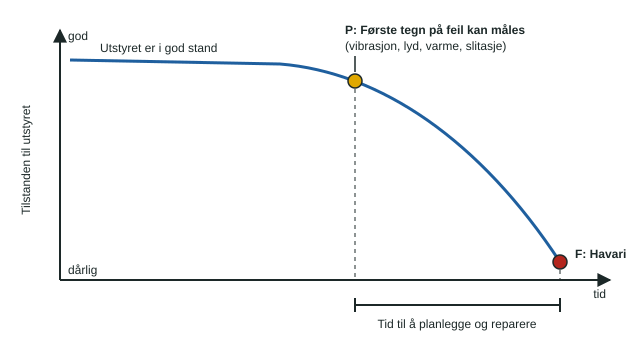

Typer vedlikehold
Det går an å vente til utstyret svikter. Du kan også bytte deler etter en fast plan, eller måle tilstanden og gripe inn når det trengs. Alle tre måtene brukes i et prosessanlegg. Kunsten er å velge riktig måte for hvert utstyr.
To hovedtyper
Vedlikehold deles i to hovedtyper, ut fra når det gjøres:
- Korrigerende vedlikehold gjøres etter at utstyret har sviktet. Feilen rettes, og utstyret settes i stand igjen.
- Forebyggende vedlikehold er planlagt vedlikehold som gjøres før utstyret svikter, for eksempel faste ettersyn og bytte av deler.
Forebyggende vedlikehold deles igjen i to: tidsbasert og tilstandsbasert. Til sammen gir det tre måter å vedlikeholde på.
1. Korrigerende vedlikehold: reparere når det har sviktet
Her venter du til utstyret svikter, og reparerer det da. Det høres dårlig ut, men det er riktig valg for utstyr der en feil ikke gjør noe særlig, for eksempel:
- en lyspære i et lagerrom
- en liten pumpe som har en reservepumpe ved siden av, og som er rask å bytte
- billig utstyr der det koster mer å kontrollere det enn å bytte det
For viktig utstyr er det dårlig valg. Som du så i regneeksemplet på siden Hvorfor vedlikehold?, kan et havari koste mange ganger mer enn et planlagt bytte, og det kan gi fare for folk og miljø.
Korrigerende vedlikehold kan ikke unngås helt. Noe vil alltid svikte uten varsel. Målet er at det skal skje sjelden, og helst med utstyr som ikke er viktig.
2. Tidsbasert vedlikehold: etter en fast plan
Ved tidsbasert vedlikehold gjøres jobben med faste mellomrom, uansett hvordan utstyret ser ut. Mellomrommet kan være
- tid i kalenderen: for eksempel test av gassdetektorer hver tredje måned
- driftstimer: hvor mange timer utstyret har gått. Mange motorer og kompressorer har en teller som viser dette.
Hvor lange mellomrommene skal være, står ofte i manualen fra produsenten av utstyret. Bedriften justerer dem etter erfaring.
Tidsbasert vedlikehold passer når slitasjen følger tiden ganske jevnt, og når feil er farlige eller ikke merkes. Det gjelder blant annet smøring, oljeskift, bytte av filtre og test av sikkerhetsutstyr. Husk skjulte feil: En sikkerhetsventil som har satt seg fast, merkes ikke før den trengs. Derfor testes den etter en fast plan.
Ulempen er at deler ofte byttes mens de ennå er gode. Det koster deler og arbeid. Hver gang utstyret åpnes, er det dessuten en liten fare for at noe blir satt sammen feil.
Regneeksempel: når skal oljen byttes?
Oppgave: Produsenten sier at oljen i girkassen til en omrører skal byttes hver 4 000 driftstimer. Omrøreren går i gjennomsnitt 20 timer i døgnet. Hvor ofte må oljen byttes?
Løsning:
- Hva vet vi? Intervall 4 000 h. Drift 20 h per døgn.
- Antall døgn = driftstimer / timer per døgn.
- 4 000 h / (20 h/døgn) = 200 døgn. 200 døgn er omtrent 6,5 måneder.
Svar: Oljen må byttes hver 200. dag, altså cirka to ganger i året. Går omrøreren døgnet rundt (24 h), blir det hver 167. dag.
3. Tilstandsbasert vedlikehold: måle og gripe inn i tide
Ved tilstandsbasert vedlikehold måles tilstanden til utstyret jevnlig. Jobben gjøres først når målingene viser at utstyret er i ferd med å bli dårlig. Å følge med på tilstanden på denne måten kalles tilstandsovervåking.
Tanken bak er at de fleste feil ikke kommer helt plutselig. Et lager som slites, begynner å vibrere og bli varmt lenge før det havarerer. Figuren viser det.

Måler du sjeldnere enn tiden fra P til F, kan feilen gå fra «ingenting å se» til havari mellom to målinger. Derfor må det måles klart oftere enn tiden fra P til F, gjerne minst to ganger innenfor den. Da blir feilen oppdaget tidlig nok til at det er tid til å planlegge reparasjonen.
Vanlige måter å måle tilstanden på:
| Metode | Hva den avslører | Typisk utstyr |
|---|---|---|
| Vibrasjonsmåling | Slitte lager, ubalanse, løse deler, at motor og pumpe ikke står på linje | Pumper, motorer, vifter, kompressorer |
| Temperaturmåling og varmekamera | Lager som går varme, dårlige elektriske koblinger, isolasjon som mangler | Lager, elektriske tavler, rør og tanker |
| Oljeanalyse | Metallspon fra slitasje, vann eller skitt i oljen | Girkasser, store pumper og kompressorer |
| Måling av veggtykkelse (ultralyd) | At veggen er blitt tynnere på grunn av korrosjon eller slitasje | Rør og tanker |
| Trykkfall over filter eller sil | At filteret eller silen holder på å gå tett. Trykkfallet er forskjellen mellom trykket før og etter filteret. Det blir større jo tettere filteret er. | Filtre, siler, varmevekslere |
| Egne sanser på runden | Ny lyd, lukt, lekkasje, varme og vibrasjon | Alt utstyr |
Operatørens runder er altså også tilstandsovervåking, selv om ingenting blir målt med instrumenter.
Fordelen er at deler byttes når de faktisk er slitt, og ikke før. Ulempen er at det koster utstyr, tid og kunnskap å måle og tolke målingene.
Vibrasjonen på en pumpe måles én gang i måneden. Bedriften har satt grensen for når pumpa skal repareres, til 4,5 mm/s.
| Måned | Jan | Feb | Mar | Apr |
|---|---|---|---|---|
| Vibrasjon (mm/s) | 1,8 | 1,9 | 2,4 | 3,2 |
Hva viser trenden? Fra januar til februar steg vibrasjonen med 0,1 mm/s, så med 0,5 og så med 0,8 mm/s. Pumpa har passert punkt P, og økningen går stadig raskere.
Stiger den like mye som sist (0,8 mm/s), er den på 4,0 mm/s i mai og over grensen i juni. Men økningen blir trolig større enn sist, så grensen kan bli nådd allerede i mai.
Hva gjør vi? Planlegger utskifting av lageret så snart som mulig, og måler oftere fram til da, for eksempel hver uke.
Hvilken type skal brukes?
| Korrigerende | Tidsbasert | Tilstandsbasert | |
|---|---|---|---|
| Når? | Etter at utstyret har sviktet | Etter fast tid eller antall driftstimer | Når målingene viser at det trengs |
| Fordel | Ingen kostnad før noe svikter | Enkelt å planlegge | Delene brukes nesten helt ut, og feil oppdages i tide |
| Ulempe | Uplanlagt stans, dyrt havari og fare | Deler byttes mens de ennå er gode | Krever måleutstyr og kunnskap |
| Passer for | Utstyr som ikke er viktig, eller som har reserve | Smøring, filtre og test av sikkerhetsutstyr | Viktige maskiner som pumper, motorer og kompressorer |
Valget avhenger mest av hvor kritisk utstyret er. Kritisk utstyr er utstyr der en feil kan gi fare for folk eller miljø, eller stoppe hele anlegget. Det får mest forebyggende vedlikehold. I et vanlig anlegg brukes alle tre typene om hverandre. Hvordan bedriften holder orden på alt dette, lærer du på siden om systematisk vedlikehold.
- Sikkerhetsutstyr skal aldri vente til det svikter. Sikkerhetsventiler, gassdetektorer og nødstopp skal testes etter fast plan, fordi feil på dem ikke merkes før det er for sent.
- Måling på roterende utstyr: Vibrasjons- og temperaturmålinger gjøres ofte mens maskinen går. Hold god avstand til roterende deler, ta aldri av vern, og bruk bare målepunktene som er laget for det.
- Åpne aldri utstyr som ikke er stoppet, tømt, trykkløst og sikret med lås og merk.
Igjen kan bilen hjelpe: Oljeskift hver 15 000 km er tidsbasert. Å bytte dekk når mønsteret er nede på grensen, er tilstandsbasert. Å reparere når frontlyset slutter å virke, er korrigerende.
Test deg selv
1. Hva er forskjellen på korrigerende og forebyggende vedlikehold?
- Korrigerende gjøres av operatøren, forebyggende av mekanikeren
- Korrigerende gjøres etter at utstyret har sviktet, forebyggende gjøres før
- Korrigerende er planlagt, forebyggende er ikke planlagt
Korrigerende vedlikehold retter en feil som allerede har skjedd. Forebyggende vedlikehold er planlagt og gjøres for at feilen ikke skal skje.
2. Filtrene i et avtrekk byttes hver tredje måned, uansett hvor skitne de er. Hvilken type vedlikehold er dette?
- Korrigerende
- Tidsbasert
- Tilstandsbasert
Jobben gjøres med faste mellomrom i kalenderen, uten at tilstanden måles først. Det er tidsbasert vedlikehold. Hadde filtrene blitt byttet når trykkfallet over dem ble for stort, ville det vært tilstandsbasert.
3. Hva viser punkt P i figuren over tilstanden til utstyret?
- Når utstyret havarerer
- Når utstyret ble satt i drift
- Når de første tegnene på feil kan måles
I punkt P kan feilen oppdages, for eksempel som økt vibrasjon. Fra P til havariet i F har du tid til å planlegge og reparere.
4. Produsenten sier at en kompressor skal ha service hver 2 000 driftstimer. Den går døgnet rundt. Omtrent hvor ofte må den ha service?
- Hver 20. dag
- Omtrent hver 83. dag
- Omtrent én gang i året
Døgnet rundt er 24 h per døgn. 2 000 h / (24 h/døgn) ≈ 83 døgn, altså nesten hver tredje måned.
5. Hvilket utstyr passer best for korrigerende vedlikehold?
- En sikkerhetsventil på en trykktank
- En lyspære i et lagerrom
- Hovedpumpa i anlegget, som ikke har reserve
Det gjør lite om en lyspære i et lagerrom går, og den er rask og billig å bytte. Sikkerhetsventilen og hovedpumpa er kritisk utstyr og skal ha forebyggende vedlikehold.
Ordliste
| Begrep | Forklaring | Engelsk |
|---|---|---|
| korrigerende vedlikehold | Vedlikehold som gjøres etter at utstyret har sviktet, for å rette feilen. | corrective maintenance |
| forebyggende vedlikehold | Planlagt vedlikehold som gjøres før utstyret svikter, for eksempel faste ettersyn og bytte av deler. | preventive maintenance |
| tidsbasert vedlikehold | Forebyggende vedlikehold som gjøres med faste mellomrom, etter tid i kalenderen eller antall driftstimer. | time-based maintenance |
| tilstandsbasert vedlikehold | Forebyggende vedlikehold som gjøres når målinger viser at utstyret er i ferd med å bli dårlig. | condition-based maintenance |
| tilstandsovervåking | Å måle og følge med på tilstanden til utstyret jevnlig, for eksempel vibrasjon, temperatur eller veggtykkelse. | condition monitoring |
| trykkfall | Forskjellen mellom trykket der en strøm går inn i utstyret og der den går ut. | pressure drop |
| driftstimer | Hvor mange timer en maskin har gått. Brukes til å bestemme når vedlikehold skal gjøres. | operating hours |
| kritisk utstyr | Utstyr der en feil kan gi fare for folk eller miljø, eller stoppe hele anlegget. | critical equipment |
Les mer
- Hvorfor vedlikehold?: hva et havari koster, og hva skjulte feil er.
- Hva er korrosjon?: hvorfor veggtykkelsen i rør og tanker måles.
- Hva er drift?: operatørens runder.
Om kildene: Teksten, eksemplene og figurene på denne siden er laget for dette nettstedet. Siden bygger på undervisningsopplegg i kjemiprosess- og laboratoriefag ved Sauda vgs, som er utarbeidet med utgangspunkt i blant annet Kjemien stemmer, Laboranten og åpne nettkilder.